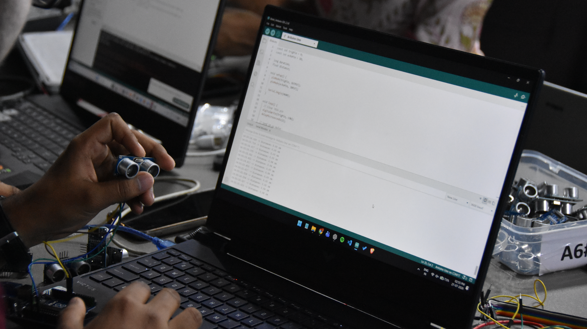
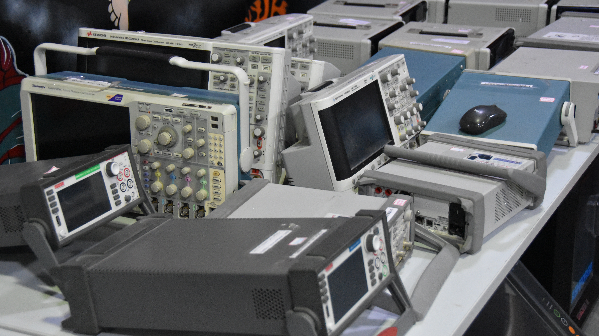
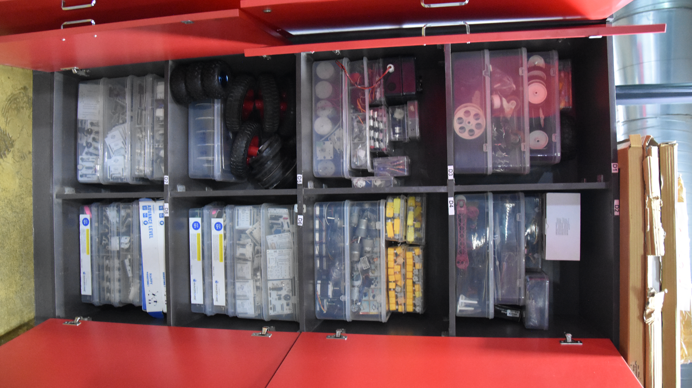
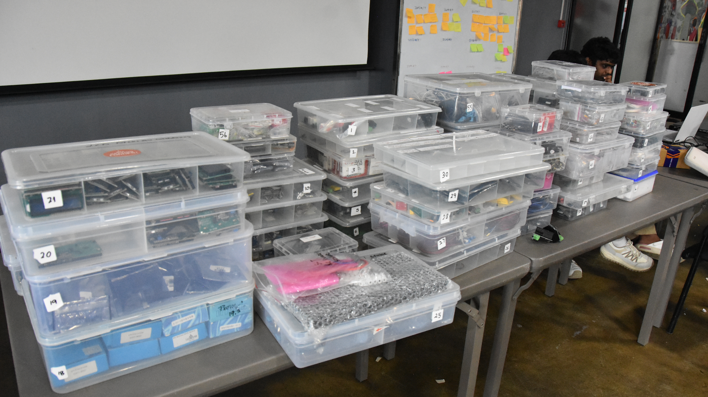

ProtoSem · Week 1
5S & Digital Portfolio
A week of workplace discipline, organization, and personal branding
Week 1 started with an orientation session on workplace management and ethics. We learned about the 5S principles — Sort, Set in order, Shine, Standardize, and Sustain — and how these practices help maintain a clean, efficient, and professional working environment. We then applied the 5S mindset to organize the workspace and our tools in a more structured and practical way. The final part of the week focused on building our personal portfolio websites and preparing them to be published online.






Week in action
Applying structure, order, and professional identity.
01
▦
Day 1
5S Orientation
- We were introduced to the 5S methodology and its importance in workplace discipline.
- Each principle was explained clearly with a focus on cleanliness, order, and consistency.
- The session helped us understand how good organization improves workflow and productivity.
02
⌁
Day 2
Workspace Organization
- We applied 5S in the work environment by sorting and arranging the area systematically.
- We separated useful items from unnecessary ones and created a cleaner setup.
- This helped us develop better habits in workspace management.
03
◫
Day 3
5S Practice
- We continued the 5S process by maintaining order and improving the work setup.
- The practice focused on sustainability, consistency, and making the space easier to work in.
- This part of the week reinforced the habit of organized thinking and execution.
04
</>
Day 4
Portfolio Building
- We worked on creating our personal portfolio websites.
- The focus was on presenting our skills, achievements, projects, and profile professionally.
- This helped us improve our digital identity and online presence.
05
🚀
Day 5
Portfolio Launch
- We completed the deployment of our portfolio websites and launched them successfully.
- The session helped us understand how to present our work online in a professional way.
- It gave us confidence in sharing our digital portfolio with others.
- Learned the 5S methodology and understood its role in organized work habits.
- Practiced sorting and arranging the workspace to improve order and clarity.
- Applied the idea of standardization to keep systems consistent.
- Built my personal portfolio website and presented my work professionally.
- Launched the portfolio successfully and improved my personal branding.
- Developed a stronger understanding of organization, workflow, and digital communication.
Growth areas
Skills Developed
5S MethodologyWorkplace OrganizationHTMLCSSResponsive Web DesignPortfolio BuildingProfessional BrandingProblem SolvingTeamworkDeployment
← Back to ProtoSem